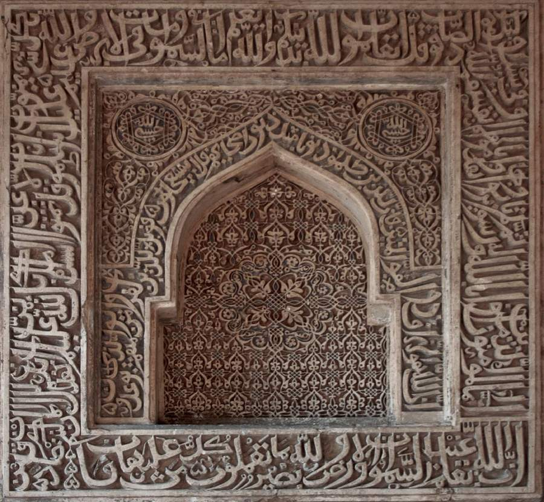

هذه الدرجة مقفلة: تُفتح عندما تُتمّ الدرجة 3 بشرطها (متوسط اختبارات ٨٠٪ + كل مهام الممارسة). يمكنك قراءة النص الآن، لكن الاختبارات ومهام الممارسة لا تعمل قبل فتح الدرجة.
1. الشهادة والأسبوع الأول
2. الوضوء والصلاة
3. الصيام ورمضان
4. القرآن والعربية
5. المجتمع والخلق
٤
«أول ٣٠ يومًا» — سلم النور، الدرجة الرابعة: القرآن والعربية
خلاصة تنفيذية ومتطلبات سابقة
هذه الدرجة تكسر رهبة العربية وتفتح علاقتك الحية بالقرآن: استماع يومي أولًا (هكذا بدأ الجيل الأول)، ثم الحروف بلا خوف، ثم جسر من الترجمة إلى الأصل، ثم أول حفظ حقيقي (الإخلاص والفلق والناس)، ثم آداب المصحف، ثم مقعدك عند معلم في أكاديمية ثقة. المتطلب السابق: إتمام الدرجة الثالثة (الصيام ورمضان) — والفاتحة المحفوظة من الدرجة الثانية هي رأس مالك هنا.
أهداف المستوى

الصورة: حدائق لودي، دلهي — Shashwat Nagpal CC BY 2.0، عبر ويكيميديا كومنز
بنهاية هذه الدرجة تستطيع أن:
- تبني عادة استماع يومي للقرآن ١٠ دقائق وتكمل تحدي ٧ أيام.
- تتعرّف على الحروف العربية شكلًا وصوتًا، وتكتب اسمك بها.
- تشرح جسر الانتقال من الترجمة إلى الأصل بمراحله الثلاث، ولماذا لا يُتعلَّم التلاوة ذاتيًّا طويلًا.
- تحفظ سور الإخلاص والفلق والناس، وتعرف آداب التعامل مع المصحف، وتحجز تقييمك في أكاديمية ثقة.
إتمام الدرجة الرابعة: معيار الإتمام ولحظة الاحتفاء
معيار الإتمام (ميكانيكا العتبة المعتمدة R2-د١٧ — نمط IOU بلا شهادات): متوسط اختبارات الدروس الستة ≥ ٨٠٪؛ المحاولات متتابعة لا تُفتح التالية منها إلا بعد مهمة مراجعة موجَّهة، والأعلى يُحتسب + مهام الممارسة مكتملة: تحدي استماع ٧ أيام منجز (أو مستأنف بلا تصفير)، واسم مكتوب بالعربية، وإخلاص محفوظة مسمّعة (والفلق والناس في الطريق أو منجزتان)، وجلسة تقييم ثقة محجوزة ومسار مختار. لا تُصدَر عند الإتمام أي شهادة — تُضاء الدرجة الرابعة بدلًا منها.
علامة الإنجاز (لا شهادة إتمام): درجة مضيئة رابعة على سلم النور + رسالة «وصلتَ إلى الدرجة الرابعة» + مراجعة رفيقك الختامية، وفتح الدرجة الخامسة الأخيرة.
قائمة تحقق الخروج من هذه الدرجة (على نمط Kawthar — R2-د١٦):
نصّ لحظة الاحتفاء (يُعرض عند الإتمام): «قبل أسابيع كنتَ تغلق المصحف العربي بعد دقيقة. اليوم: تستمع كل يوم، وتكتب اسمك بحروف الوحي، وتحمل في صدرك ثلاث سور تصلّي بها، ومقعدك محجوز عند معلم حيّ سيأخذ بيدك أبعد. درجتك الرابعة مضيئة — ولم يبقَ على قمة سلمك إلا درجة واحدة: أن تصير بيتك الجديد بيتًا كاملًا — المجتمع والخلق».
خطوتك التالية: الدرجة الخامسة والأخيرة من سلم النور: «المجتمع والخلق» — بيتك داخل مجتمعك الجديد، وخطة ما بعد الثلاثين يومًا.
لوحة إتمام الدرجة
الدرس
أفضل نتيجة للاختبار
مهمة الممارسة
قائمة تحقق الخروج من هذه الدرجة
وصلتَ إلى الدرجة الرابعة
قبل أسابيع كنتَ تغلق المصحف العربي بعد دقيقة. اليوم: تستمع كل يوم، وتكتب اسمك بحروف الوحي، وتحمل في صدرك ثلاث سور تصلّي بها، ومقعدك محجوز عند معلم حيّ سيأخذ بيدك أبعد. درجتك الرابعة مضيئة — ولم يبقَ على قمة سلمك إلا درجة واحدة: أن تصير بيتك الجديد بيتًا كاملًا — المجتمع والخلق
القرآن الكريم — الآيات والسور: [الزمر: ٢٣]، [المزمل: ٤]، [القيامة: ١٧–١٩]، [الواقعة: ٧٩]، [الحج: ٣٢]، سور الإخلاص والفلق والناس.
صحيح البخاري (٥٠١٣، ٥٧٤٧) وصحيح مسلم (٨١١) — التحقق عبر الدرر السنية (dorar.net).
مجمع الملك فهد لطباعة المصحف الشريف — ترجمات المعاني المعتمدة.
موقع إسلام ويب (islamweb.net) — مواد علاقة المسلم الجديد بالقرآن.
موقع الإسلام سؤال وجواب (islamqa.info) — أجوبة تعلم التلاوة والعربية.
أكاديمية ثقة (Thiqa Academy) — الإحالة التعليمية المعتمدة للمستوى.
تنبيه منهجي للمشارك: هذا المستوى تعريفي وتحفيزي، والتعليم الفعلي للتلاوة والحفظ والعربية يتم مع معلم مباشرة في أكاديمية ثقة كما هو موضح في الدرس السادس.
سؤال يلحّ عليك؟ اسأل إنسانًا — محادثة أولى مجهولة، بلا حساب.